Colossus Revamp, 2027
Vélez would get to his desk at Sequoia by 5am.
this sentence from the vélez piece got 2,826 likes on x. its launch post got 1,031.
colossus asked to change everything, at once.
“if we’re doing it, let’s do all of it.”gabi marques, creative director, 3 november
- the site“every page is the same.” photo stories you can scroll through.
- instagram“a goldmine” of photographs that go unused.
- illustrationart for the pieces nobody photographs.
- podcastsdefine the shows, revisit the thumbnails.
- printthe site and the magazine together, “from the start.”
- the systemone brand the team can run without building things by hand.
and to start 2027 with something new.
the diagnosis: great photographs, and no system around them.
from eight issues, 303 posts on x and colossus’s figma file.
the portrait carries the brand. the card and the tile have nothing to lean on.
the launch poster: the portrait does the work. photograph by stephen voss.
the passage card: made by the team, by hand, for each launch.
the show tile: a different typeface and colour from the magazine.
from @colossusmag on x and colossus’s figma, as of 16 november 2026.
eight covers, one idea: a person, and five places for the name.
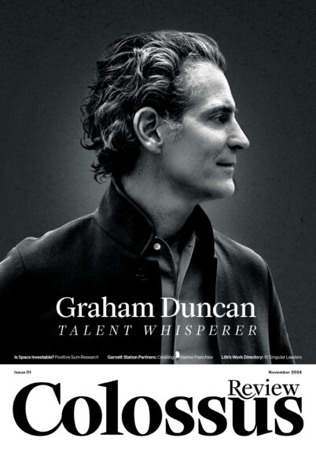
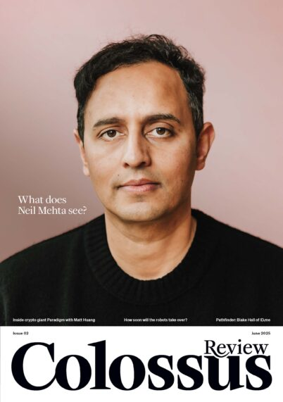
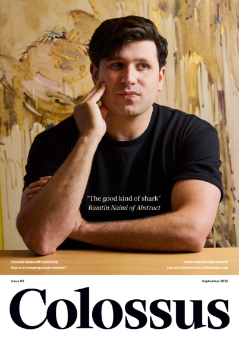
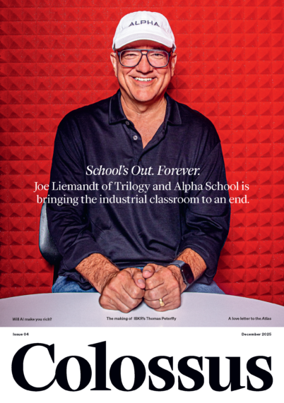
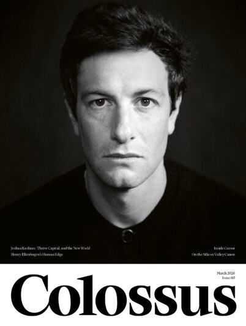
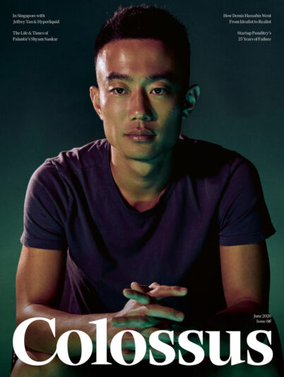
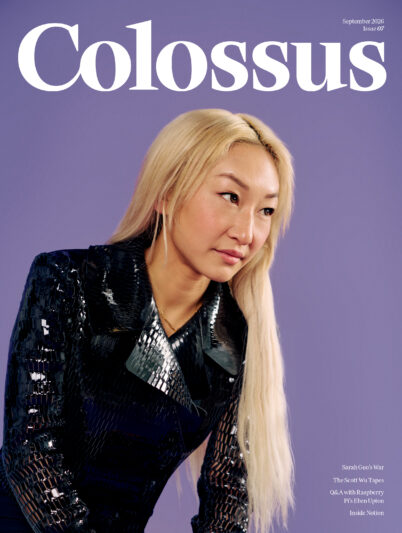
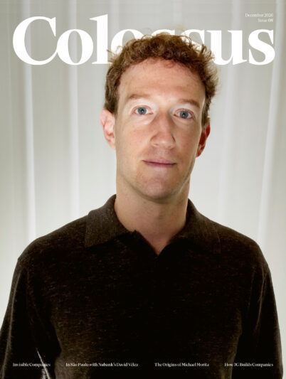
being on a colossus cover should feel like joining a pantheon. that takes one grammar, so i’d re-set all eight.
colossus’s sentences outrun its launch posts. the vélez passage did, almost three to one.
likes on the passage screenshotlikes on the launch post
passage screenshots are 110 of colossus’s 303 posts: a median of 49 likes and 13,700 views. launch posters get 13 and 2,750.
@colossusmag on x, january 2025 to 16 november 2026; likes as shown that day.
every story gets the same page, so a photo-heavy profile becomes one long scroll.
the kushner profile, “the new world”: the second of the two headers
the first header, used by 10 of the 16 pieces measured
the kushner profile, top to bottom: about fifty screens, the portraits stacked one under another in a 678-pixel column.
colossus asked for a way to scroll through the photographs, instead of each one dropped into the middle of the text.
the answer: show colossus as the brand it already is, even without a photograph.
i won’t invent a new brand. we take what colossus already is and make it show on every cover, page, show and clip, so the team runs it without building things by hand.
- 1two directions explored, then met in the middle
- 2a month to build the foundation, on colossus’s own stories
- 3the site first. everything else takes its look from it
- 4the launch with the next issue, the past covers re-set by then
colossus, 2027
colossus, 2027: one system.
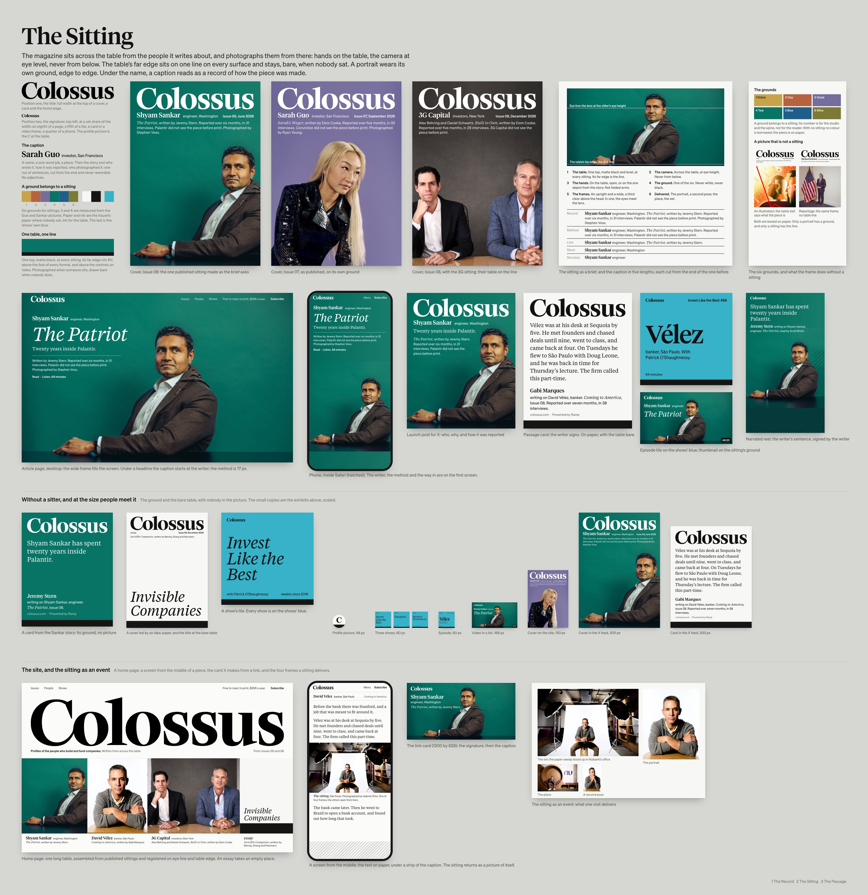
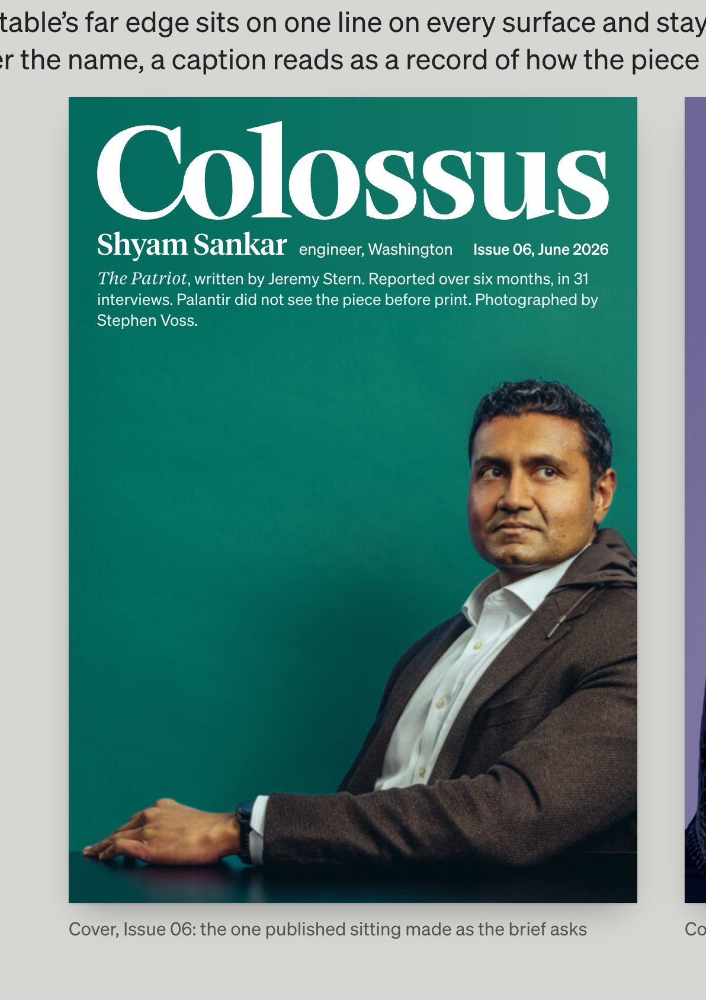
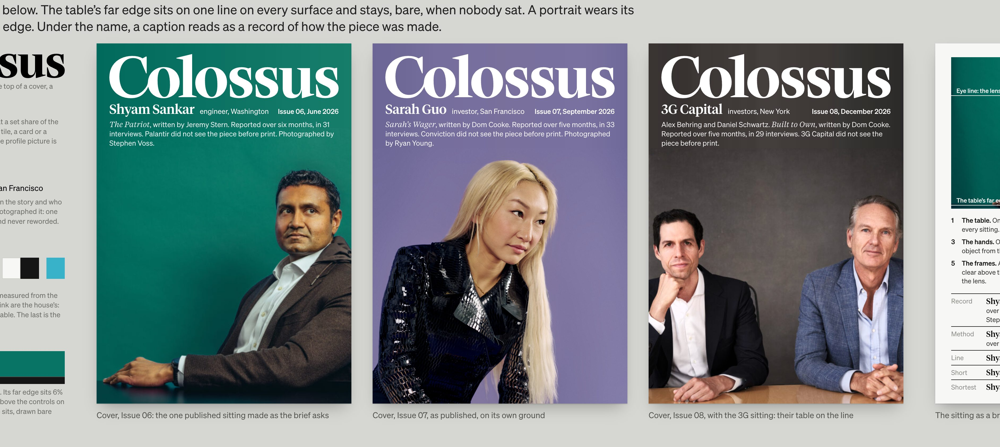
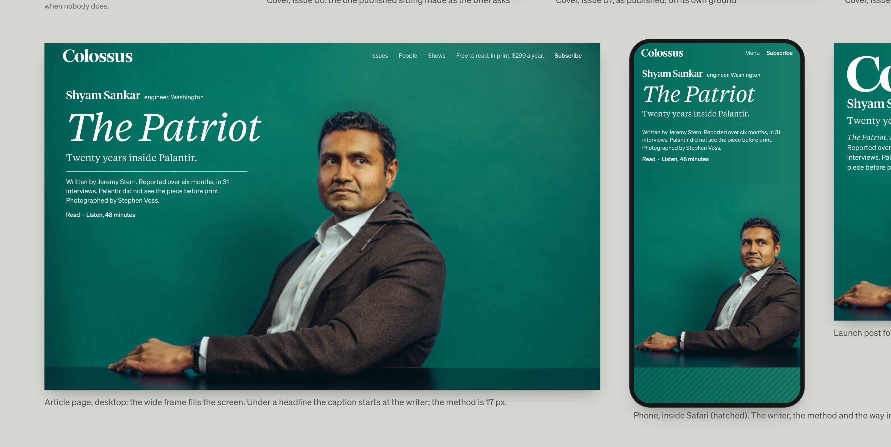
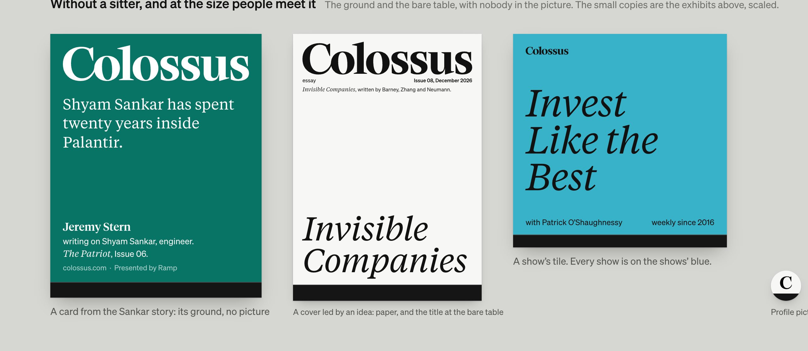
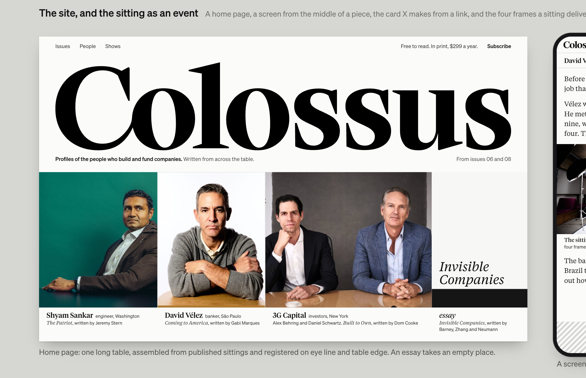
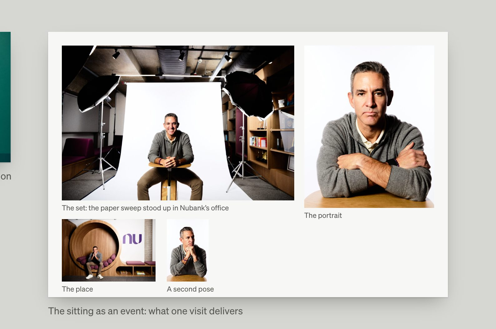
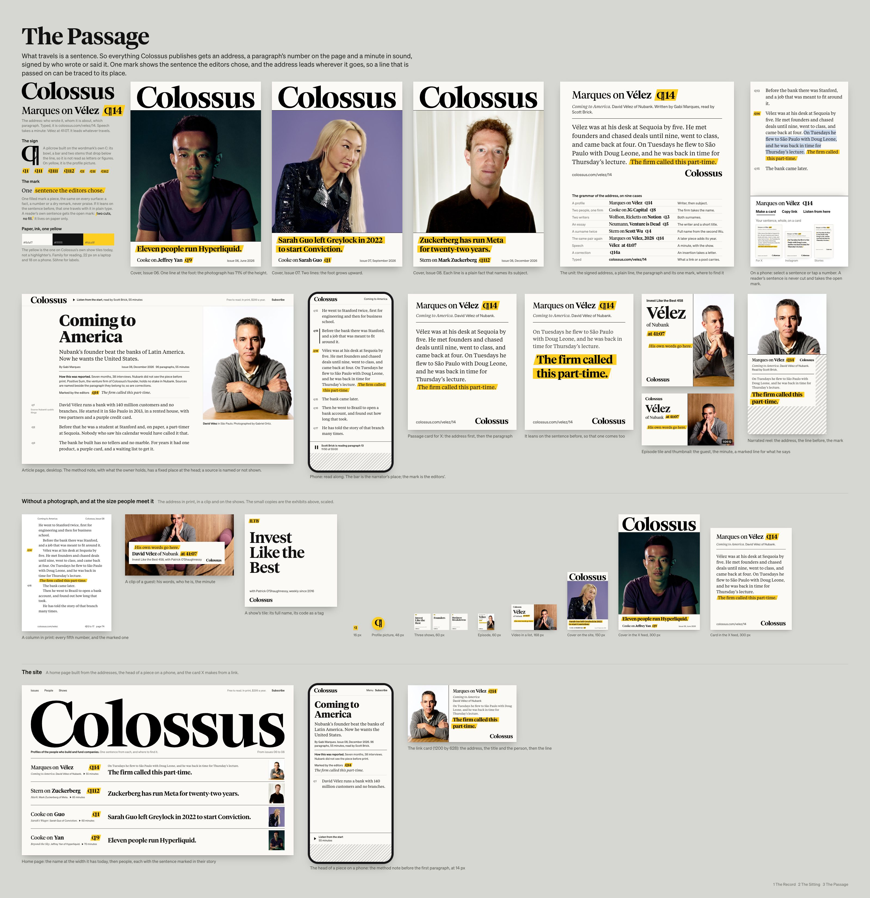
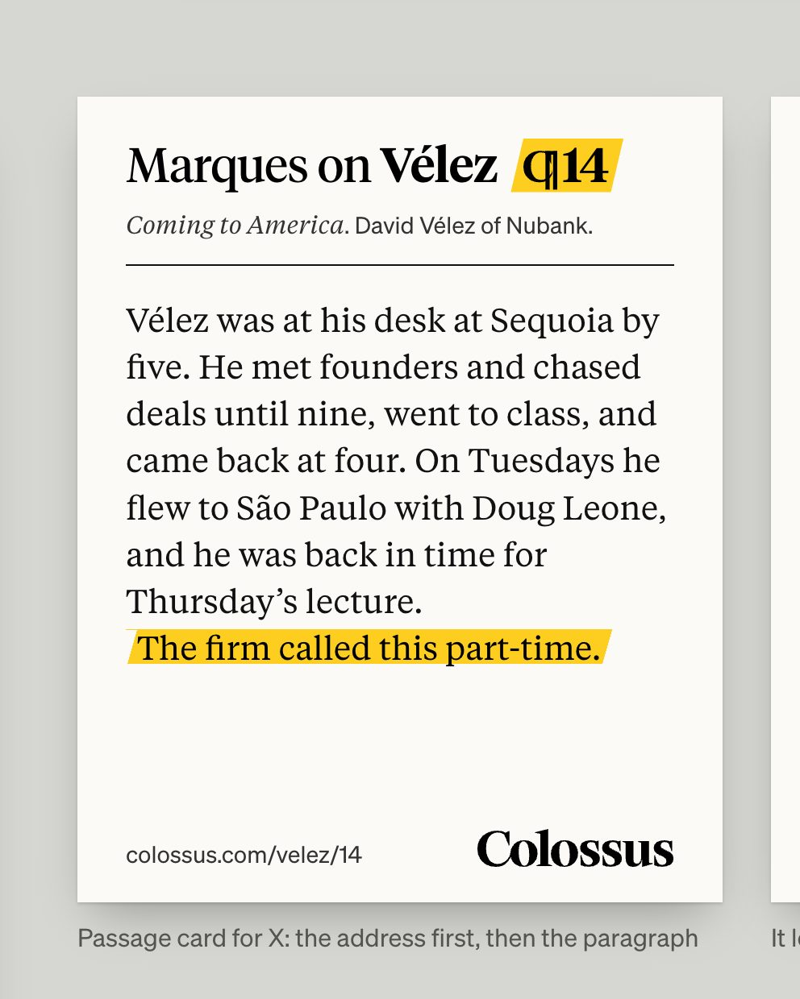
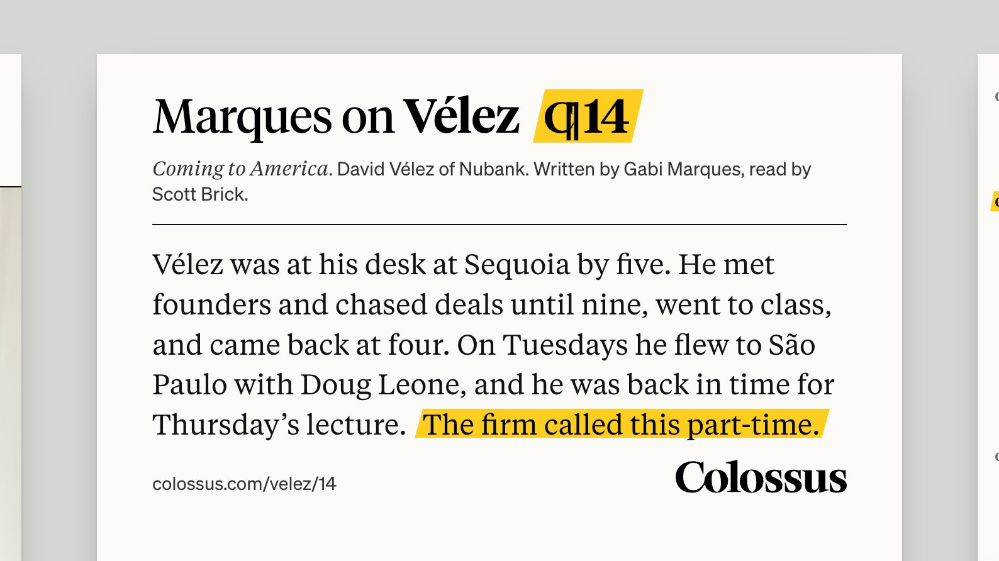
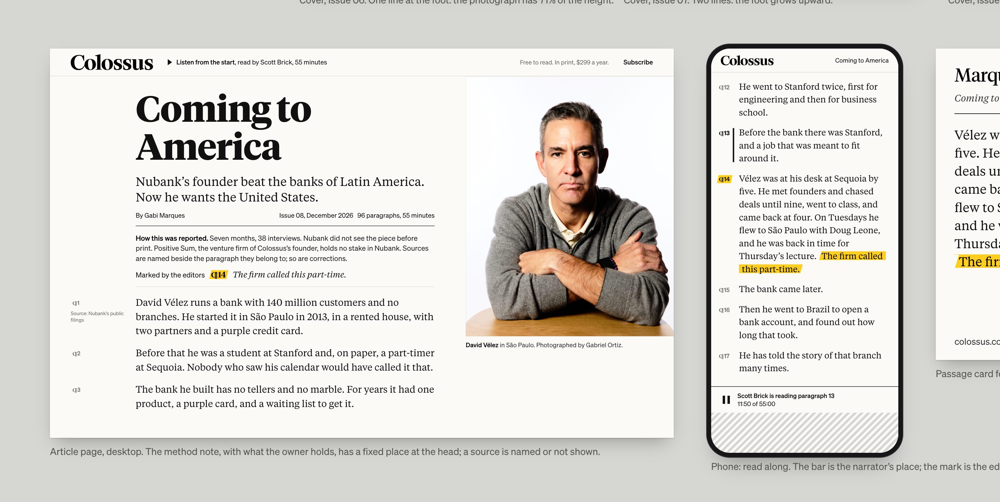
i explored two directions and met in the middle:
- the covers: full bleed, at eye level, on the sitter’s own ground.
- the pages and the cards: readers highlight a sentence as they read, and it travels with its address.
- the audio: every piece read aloud, and the text follows the narrator.
- one system from the start: covers, site, cards and shows.
pieces from the working sheets, as a first sketch; words and figures are samples.
the covers
every cover is a sitting, and every portrait joins a set.
across the table, at eye level, on the sitter’s own ground. the figures in the captions are examples.
the site
the sitting fills the screen.
under the headline, a caption says how the piece was made.
no photo
without a photograph, it still looks like colossus.
the sitter’s ground and the table carry it.
home
the home page is one long table of everyone who sat.
the same one-on-one as the covers: everyone at eye level, looking straight at you.
the vélez shoot already gives four frames.
the portrait, a second pose, the place, the set. readers care about the craft as much as the team does.
the words and figures on the sheet are samples; people, titles and photographs are as published.
the cards
the best sentence of every piece travels as a card, with its address.
every paragraph gets an address. a reader selects a sentence and gets this card. the paragraph shown is a stand-in.
read along
every piece read aloud, and the text follows the narrator.
here it follows scott brick’s voice. the marked sentence is the one the team would post.
the words and figures on the sheet are samples; people, titles and photographs are as published.
a month of foundation, then the site, then every issue follows it.
the foundation
the brand’s foundation, decided on colossus’s own stories and photographs. colossus signs off.
the site and the system
the site first. the covers, the cards, the show tiles and the clips take their look from it.
with the next issue
the first issue whose design hasn’t started, with the eight past covers re-set by then.
every issue
each with its own kit.
after the first month, colossus already has: the vélez story as a photo story you scroll, an instagram row from that shoot, the cover grammar, and the plan for the year.
what the year includes.
to the launchthe redesign
- the brand’s foundation, decided on colossus’s own stories and photographs
- the cover grammar, and the eight published covers re-set in it
- the site, designed and built with colossus’s developers, with photo stories you scroll
- the podcasts as one network: show names, tiles, thumbnails and episode pages
- passage cards with their address, and clips
- read-along for every piece with an audio version
- the launch, with one issue
every issue after itthe rest of the year
- the cover, in print and in motion
- the launch kit: posters, passage cards, narrated reels
- instagram from the issue’s own shoot
- illustration, art-directed
- an issue film
- a working session with the team every week
stays with colossus’s teams, working from the new system: typesetting the print issues, colour prepress, and the site’s backend and subscriptions.
one fixed fee for the year.
paid upfront
$30,000
at signing.
paid monthly
$36,000
twelve payments of $3,000, from the start date.
it covers twelve months from the start date: the month of foundation, the redesign, the launch and every issue after it. i never charge by the hour. prices are in us dollars.
an agency’s deliverables, made side by side with the team.
colossus doesn’t need to pay for taste: it already has it. it needs a partner who turns that taste into the brand colossus already is, and builds it with the team instead of presenting it at four meetings.
- weird fishesthe brand system, the covers, the site’s design and front end, the cards, reels, clips, instagram and the podcast network, and art direction for illustration. the files and the code are colossus’s.
- colossus’s developersthe backend and subscriptions. i build the front end with them, on the platform the site already runs on.
- colossus’s design teamtypesetting the print issues, from the new system and its cover grammar.
- colour prepressas today.
- colossussigns off the foundation at the end of the first month, then each issue’s kit.
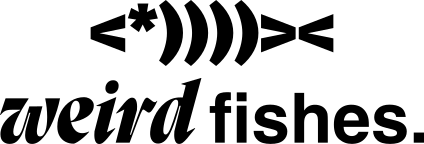
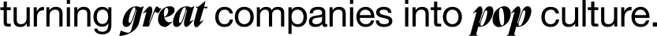
noise°
a crypto company’s instagram, run as a culture magazine. 400 to 17k followers while i ran it.
wfishes.com ↗the proposal on one page.
- what i foundgreat photographs, and no system around them. colossus’s sentences already travel further than its launch posts.
- the answershow colossus as the brand it already is, even without a photograph: one system for every cover, page, card, show and clip.
- the plana month of foundation, then the site, then the launch with the next issue. the eight published covers are re-set by then, and every issue after gets its own kit.
- the price$30,000 for the year, paid upfront, or $36,000 in twelve monthly payments of $3,000.
- nextcolossus picks a start date.
next: a start date.
- firstcolossus picks a start date, and whether to pay upfront or monthly.
- that daythe month of foundation starts: we decide the brand together, on colossus’s own stories, and make the first batch of visuals.
- a month incolossus signs off the foundation.
- thenthe site and the system, the launch with the next issue, and every issue after it.
joão passarelli, weird fishes atelier · wfishes.com
the truth is:
colossus is named for “the growing tower of knowledge.” every issue adds a floor.a brand is the part you should only have to build once.
×